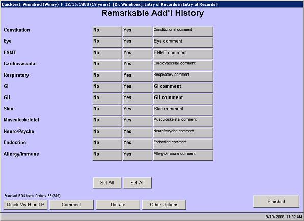

In this solution...
- Description
- Want to Learn More?
- Related Solutions
- Related Education Opportunities
Description
The Yes/No format for observation screens is commonly used as a quick-entry method to collect information. The Yes/No format is often used for Child Development, Anticipatory Guidance, Review of Systems, etc.
One advantage to the Yes/No format is that the user has a Select All option below each column to allow a one-touch entry of multiple answers. So if the majority of the answers are Yes, use the Select All below the Yes column. Then the user can individually change the answers to No as applicable to the patient.
Example

|